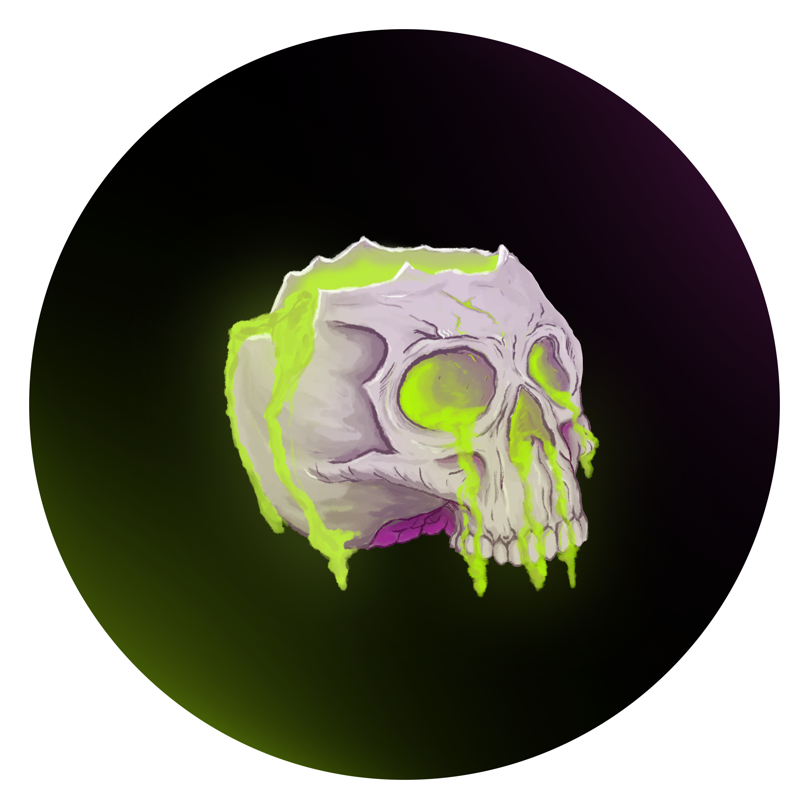
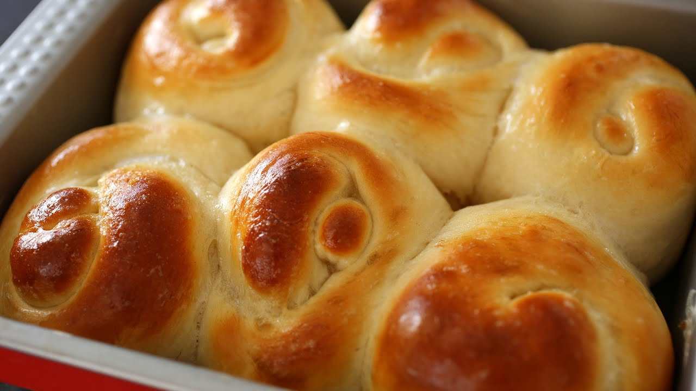

Perwujudan keahlian dalam seni pembuatan roti. Kami hanya menggunakan bahan-bahan premium dari gandum pilihan hingga ragi alami untuk menghasilkan roti dengan tekstur yang sempurna dan cita rasa yang kaya. Setiap produk adalah cerminan dedikasi kami pada kualitas, memastikan Anda menikmati kehangatan dan keotentikan di setiap gigitan. Roti kami diciptakan untuk meningkatkan kualitas momen harian Anda, menjadikannya lebih istimewa.

Memilih ROTI BAKERY berarti memilih kualitas tanpa kompromi. Kami menjaga tradisi dengan sentuhan inovasi, menyajikan roti yang tidak hanya lezat tetapi juga mewakili gaya hidup yang elegan. Dibuat dengan standar kebersihan tertinggi, produk kami adalah janji akan kesempurnaan dan kesegaran yang konsisten. Pesan Sekarang dan rasakan pengalaman roti yang melampaui ekspektasi.
ROTI BAKERY menjamin kualitas premium dengan pemilihan bahan baku yang cermat. Kami menggunakan Tepung Protein Tinggi untuk volume sempurna, Ragi Aktif untuk tekstur ideal, dan Mentega Unsalted Terbaik untuk kelembutan dan aroma mewah. Setiap komponen—dari cairan hingga pemanis—dipilih dengan standar tertinggi untuk menghadirkan roti yang benar-benar unggul.
Isian ROTI BAKERY diseleksi berdasarkan standar gourmet, memprioritaskan kualitas premium dan kesegaran. Kami memastikan isian memiliki tekstur yang stabil dan kesesuaian rasa sempurna yang melengkapi kelembutan roti, bukan mendominasi.